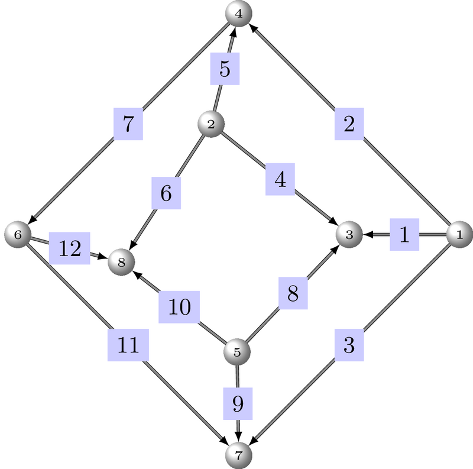
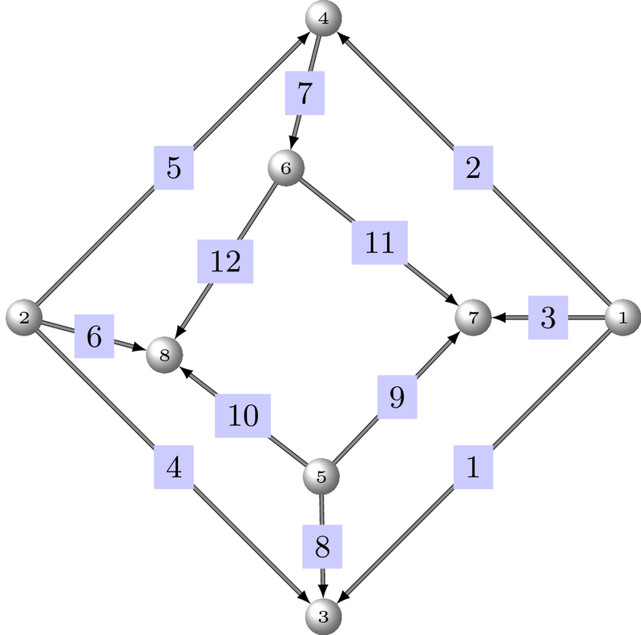
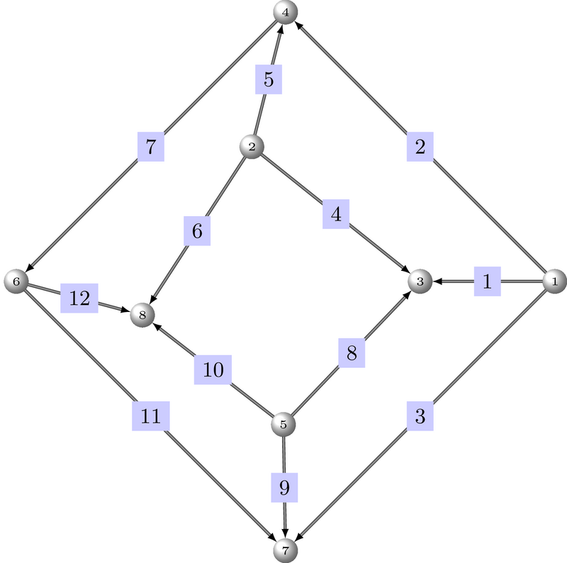
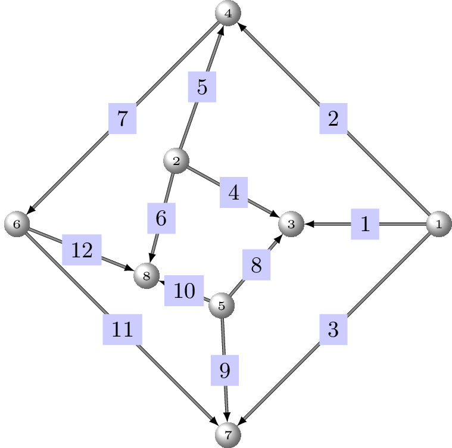
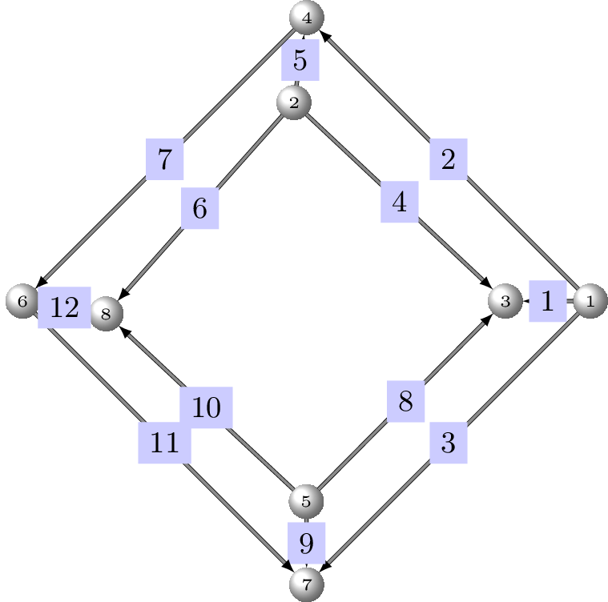

Any planar digraph (see Digraphs package reference 6.6-1) can be embedded in the plane in such a way that its edges do not intersect and that its edges are straight lines. Since straight lines often are the most simple and aesthatical pleasing we want our embeddings of planar graphs to have straight edges. Therefore, one can use the following method:
‣ DrawStraightPlanarDigraphToTikz( graph, file, printRecord ) | ( property ) |
Returns: a record
Draw the given planar digraph into a tex-file (using TikZ). If graph is a planar connected digraph (and one defines the faces the graph has 3.1-2), then the drawing printed into file is a plane embedding of graph with straight edges which do not intersect. The drawing algorithm constructs the embedding by successively manipulating a convex drawing drawing plane and calculating new vertex coordinates. Trying to use the function for a digraph that is not planar and connected results in returning fail.
If the given file does not end in .tex the ending .tex will be added to it.
The given file will be overwritten without asking if it already exists. If you do not have permission to write in that file, this method will throw an error.
The particulars of the drawing are determined by the given printRecord.
The printRecord will be modified and returned by this method. It contains the data to recreate the drawing of the graph.
There are parameters to change the output of this method. There are the following classes of parameters:
Faces (3.1-2): Define the faces the planar graph has. One parameter is obligatory to be changed. Otherwise the method throws an error.
Appearance (3.1-3): These parameters control the appearance of the drawing.
Output control (3.1-4): Modify how the LaTeX-output behaves and how much information is printed to the console.
This subsection covers the parameters that define the faces of the graph which should be drawn. Since the method is still working in process the user has to manually define all the faces the graph has characterised by their surrounding nodes. The parameters are:
nodesOfFaces: Define all faces the graph has characterised by their surrounding nodes.
infiniteFace: Define the infinite face characterised by its surrounding nodes. The nodes of the infinite face will form the outer ring of the embedding.
We will exemplify them with the following graph in order to make clear how the parameters work:
gap> graph := Digraph([[3,4,7], [3,4,8], [1,2,5], [1,2,6], [3,7,8], [4,7,8], > [1,5,6], [2,5,6]]);; gap> IsPlanarDigraph(graph); true gap> IsConnectedDigraph(graph); true
This graph is as seen above a planar connected graph and thus can be drawn with the method. Therefore, one must define the the graph's faces inside of a record. The file name will simply be graph_embedding.
nodesOfFaces: The faces that have to be defined are characterised by its surrounding nodes. That means that a face can be seen as a cycle of nodes. For nodesOfFaces one has to give a list of lists where on of these lists is a cycle when going around that face in any direction.
gap> printRecord := rec(nodesOfFaces := [[1,4,6,7], [1,4,2,3], > [2,3,5,8], [5,8,6,7], [2,4,6,8], [1,3,5,7]]);; gap> DrawStraightPlanarDigraphToTikz(graph, "graph_embedding", > printRecord);;

infiniteFace: One can change the face that will be the infinite face. Any face can be chosen. If infiniteFace is not set up by the user one face with the most nodes will be used as a default. Using the same printRecord from previous example results in:
gap> printRecord.infiniteFace := [1,4,2,3];; gap> DrawStraightPlanarDigraphToTikz(graph, "graph_embedding", > printRecord);;

This subsection covers the parameters that control the appearance of the drawing. The parameters are:
scale: Globally scales the picture. The default is 2.
spread: Changes the amount of spread, i.e. how the nodes are distributed inside the graph.
We will exemplify them with the following graph in order to make clear how the parameters work:
gap> graph := Digraph([[3,4,7], [3,4,8], [1,2,5], [1,2,6], [3,7,8], [4,7,8], > [1,5,6], [2,5,6]]);; gap> printRecord := rec(nodesOfFaces := [[1,4,6,7], [1,4,2,3], > [2,3,5,8], [5,8,6,7], [2,4,6,8], [1,3,5,7]]);; gap> DrawStraightPlanarDigraphToTikz(graph, "graph_embedding", > printRecord);;
scale: By default the scale is set to 2. Now one can change it by:
gap> printRecord.scale := 3;; gap> DrawStraightPlanarDigraphToTikz(graph, "graph_embedding", > printRecord);;

spread: Modifies the position of the nodes. The spread parameter can be chosen as a float in the interval (0, 1). Choosing the parameter outside the interval results in an error. Choosing a number close to 1 modifies the nodes such that they tend torwards the outer ring of the face graph. Choosing a number close to 0 modifies the nodes such that they tend torwards the middle of the graph. The default spread is set at 0.5. Here are two examples with spreads 0.3 and 0.7:
gap> printRecord.spread := 0.3;; gap> DrawStraightPlanarDigraphToTikz(graph, "graph_embedding", > printRecord);;

gap> printRecord.spread := 0.7;; gap> DrawStraightPlanarDigraphToTikz(graph, "graph_embedding", > printRecord);;

This subsection contains miscellaneous parameters to control the output of DrawStraightPlanarDigraphToTikz 3.1-1. It contains the following options:
compileLatex: If this parameter is true (the default is false) the generated tex-file will be automatically compiled with pdflatex. In rare cases the compilation might run into a problem and stop. To abort such a computation, type 'x' and hit ENTER (this command is passed to pdflatex). If this happens, please notify the developers so it can be fixed in a later version.
latexDocumentclass: Defines which documentclass is used for the output. The default is article. If the picture should not be cropped (and not be printed), standalone is recom- mended.
noOutput: If this parameter is true (the default is false) the method DrawStraightPlanarDigraphToTikz will produce no output on the console.
onlyTikzpicture: If this parameter is true (the default is false) the generated tex-file will only consist of a tikzpicture without header (it is not possible to compile it on its own).
generated by GAPDoc2HTML